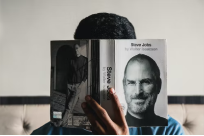
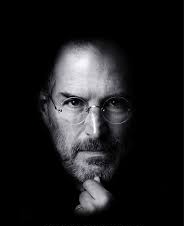
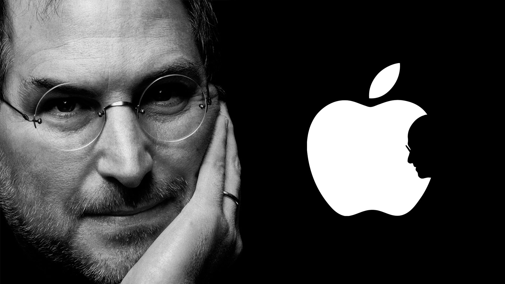

In honor of Steve Jobs, the late co-founder of Apple and the person who will be remembered as a
digital visionary, we
have compiled a list of some of his most memorable quotes about success in business which will help
you learn from his
extraordinary life.

Steven Paul Jobs (February 24, 1955 – October 5, 2011) was an American entrepreneur, industrial
designer, business
magnate, media proprietor, and investor. He was the co-founder, the chairman, and CEO of Apple; the
chairman and
majority shareholder of Pixar; a member of The Walt Disney Company's board of directors following
its acquisition of
Pixar; and the founder, chairman, and CEO of NeXT. He is widely recognized as a pioneer of the
personal computer
revolution of the 1970s and 1980s, along with his early business partner and fellow Apple co-founder
Steve Wozniak.

He died of respiratory arrest related to the tumor on October 5, 2011 at the age of 56.

“If today were the last day of your life, would you want to do what you are about to do today?”
- STEVE JOBS
He and Wozniak co-founded Apple in 1976 to sell Wozniak's Apple I personal computer. A year later, the duo gained fame
and wealth with production and sale of the Apple II, one of the first highly successful mass-produced microcomputers.
Jobs saw the commercial potential of the Xerox Alto in 1979, which was mouse-driven and had a graphical user interface
(GUI). This led to the development of the unsuccessful Apple Lisa in 1983, followed by the breakthrough Macintosh in
1984, the first mass-produced computer with a GUI. The Macintosh introduced the desktop publishing industry in 1985 with
the addition of the Apple LaserWriter, the first laser printer to feature vector graphics.
Honors and awards
1985: National Medal of Technology (with Steve Wozniak), awarded by US President Ronald Reagan
1987: Jefferson Award for Public Service
1989: Entrepreneur of the Decade by Inc. magazine
1991: Howard Vollum Award from Reed College
2004–2010: Listed among the Time 100 Most Influential People in the World on five separate occasions.
2007: Named the most powerful person in business by Fortune magazine
2007: Inducted into the California Hall of Fame, located at The California Museum for History, Women and the Arts
2012: Grammy Trustees Award, an award for those who have influenced the music industry in areas unrelated to performance
2012: Posthumously honored with an Edison Achievement Award for his commitment to innovation throughout his career.
2013: Posthumously inducted as a Disney Legend
2017: Steve Jobs Theatre opens at Apple Park
2022: Posthumously awarded the Presidential Medal of Freedom by US President Joe Biden.